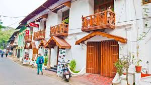

| FORT KOCHI Fort Kochi, the western part of the Kochi city of Ernakulam district in Kerala. It is about 12 km away from Ernakulam Town. Fort Kochi has played an important role in the history of Kerala. Fort Kochi also has several attractions like the Santa Cruz Basilica. Fort Kochi also houses many historical monuments such as the St. Francis Church, the first church of Vasco da Gama, the Dutch Seminary, the China Vela and many others. The Indian Navy’s ship, Dronacharya, is located in Fort Kochi. |
| GEOGRAPHY Kochi lies at the northern end of a narrow neck of land, about 19 km long and less than 1.6 km wide in many places, and is separated from the mainland by inlets from the Arabian sea and by the estuaries of rivers draining from the Western Ghats. As a result, Kochi is a natural harbour. Much of Kochi lies at the sea level, and the city along with the suburbs span an area of around 440 km². The city has a seacoast of about 30 miles. Willingdon Island is a large artificial island, created by dredging the Vembanad Lake under the direction of Lord Willingdon. The city has a rich network of backwaters, which has been declared as National Waterways by the Central Government. |
| CLIMATE OF KOCHI  Kochi has a tropical monsoon climate with temperatures ranging between 20°C and 35°C. Maximum temperature recorded in summers is about 38°C and minimum in winters is 17°C. The South - west monsoons are from June to September where Kochi experiences heavy rainfall and light showers from October to December due to north – west monsoon. The average annual rainfall is about 350 cm with approximate 132 days of yearly rainfall. |